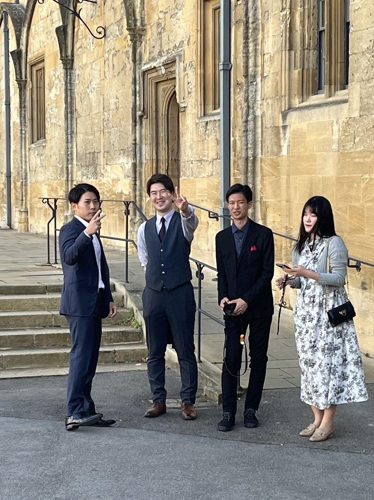

Christ Church Dinnerの後にお話しさせていただいて、今後の自分の進路を見つめ直すきっかけとなりました。短期間でイギリスの大学を受験するために奮闘されたことを聞き、Boarding Schoolやファウンデーションコース以外にも英国大学の受験の可能性は十分にあることを知ったと共に、努力次第であることを改めて感じました。帰国後、飽きずに頑張ります。ありがとうございました。
伸です。
しゅうご
サッカー観戦の際は引率で大変お世話になりました。 体調不良の真っ只中でしたが、いろいろサポートしてくださり感謝しています。 白熱した試合を観戦できてよかったです！ ありがとうございました。
松田瑠莉
ちひろさんは、夜ご飯に中華を食べに行った時、選ぶ食事のセンスが良くて、美味しく、楽しく食事することが出来ました。ありがとうございました。
米田真歩
約2週間ありがとうございました！ 中華料理、ごちそうさまでした！
なす
ツアーやディナーなどでお話しできて、すごく嬉しかったです！2週間ありがとうございました！！
るりこ
後藤田裕一郎
参加しているメンバーへの接し方が優しく、関わりやすい印象を受けました。笑っているちひろさんが一番かっこいい!!です。またお会いできれば嬉しいです。ありがとうございました。
志村絆蔵
"16日間サポートありがとうございました！ 寮での分からないことなどをLINEグループで教えていただき、とても助かりました。 ディナーでのちひろさんカッコよかったです笑"
そよ
ほとんど関わってませんが、私の名前覚えててくださっていたの嬉しかったです。あ、ちなみに洗足学園の渡辺想佳です。全然関係ないですが、インスタの公式マークついてるの周りの人で初めて見ました。 短い間でしたが、ありがとうございました。
英輔
サッカー観戦ガチおもろかったで
S.NOA
やぁ、ちひろさん。優等生の庄司です。今回はほんとにお世話になりました。初めての出会いは高一の夏でした。キラキラひかるちひろさんに心奪われました。そして一緒にサッカーしたり、サッカーの試合見て、写真撮ってピザ食ったり、バーで会ったり、ほんと色々な場面でお世話になりました。お酒は飲めなかったですが、２０歳になってから一緒に飲みたいです🍶潰れないようにしてくださいねー。ほんとにお世話になりました。☺️
永井理央
Oxfordでの夜、遅くまで残って密かにやっていたAmong Usがとても楽しかったです！ 短い期間でしたが、ありがとうございました✨

すずきるか
ちひろさん違うカレッジでしたが色々話してくれてありがとうございました！ これからもよろしくお願いします こんな20代になりたい
まっきー
行きの飛行機から帰りの飛行機まで、ずっと聖光生を見守ってくださってありがとうございました！
翔太朗
最初は筋肉のすごい人というイメージでしたが、思いっきりすごい人だと知ってビビってます。ご飯とても美味しかったです。サッカー観戦で初めて生の欧州サッカーを見て感動しました。電車のストライキなど日本ではなかなか経験できないイギリスらしいことがたくさんあり、面白かったです。来年の聖光祭にぜひ宇宙食を買いにきてください。
Go
とっても頼もしかったです！ また会いましょう！
もり
お疲れ様です。楽しく価値のある経験をさせていただきました。2週間も本当にありがとうございます☺️

秋山晃史郎
秋山です。ベイリオルとキングスの引率ありがとうございました。サッカーしたり、みんなで中華を食べたりしたのがいい思い出です。改めて、ありがとうございました。
今井
ありがとうございました。たくさんの場面で頼もしかったです。

まなか
2週間お世話になりました！！ 一緒にお話出来て、among usもできて楽しかったです😆 本当に有難うございました！！
滝澤 明優葉
2週間ありがとうございました！ 先日のロンドンツアーの帰りに、中華料理店でメニューのお気遣いをいただきありがとうございました！ あまりお話させていただく機会はありませんでしたが、ご親切にしてくださり嬉しかったです！ 今まで本当にありがとうございました！
小玉
全体のグループに誤爆した写真、いい写りでしたね︎👍🏻 中華美味しかったです〜！ ありがとうございました！
あかり
Oxfordのディナーの日の夜にまこさんの部屋で少しお話できて嬉しかったです！ Cambridgeのおすすめのスイーツ屋さんもありがとうございます！！またいつかお話させて頂きたいです🥰
keisyo
この2週間ありがとうございました！
松本泰知
げんき
とりあえずものすごい人だと思いました。ちひろさんのFuck You!!2回がめちゃくちゃ好きです！！聖光祭ぜひ来年も来てください！！
中川こうき
かっこよかったっす。憧れのイケメンです。

孔
いろいろお世話になリマした。ありがとうございます。
みずき
強面で強そうなサポーターだなと言う印象があったのですが、意外とお茶目で駅までの移動中にスクーターで登場した時にはとてもスマートで面白く、驚きました。また、ディナーの時には少し酔ったのかな~と思うほどの行動をしていたのもいい思い出です（笑）ありがとうございました！
みれい
全然女子の前では笑顔見せないし、どういうキャラなのか分からなかったけれど、男の子から聞いた話から良い人だとわかりました。ありがとうございました。

ひらこたかのり
ちひろさん、二週間短かったですが、本当にありがとうございました。 CONFIANZAのことを知っていることには驚きました笑 またいつかご縁があればお会いしたいです！
.jpg)
Masaki.Y
ちーさん ２週間ありがとうございました！ カレッジだけじゃなく、サッカー観戦も楽しかったです！ロンドンで俺も女の子と遊べるようになります笑 写真もいっぱい撮れたし、最高でした！ 本当にありがとうございました！！！
いどたかし
最後写真だけとってもらった人です
加藤
かっこいいです。ありがとうございました。
櫻井惺也
お世話になりました。ありがとうございまた！
大垣慶介
初日から最終日まで色々とお世話になりました。ありがとうございました。
さとうゆきこ
インスタの交換、ありがとうございました！
りな
2週間お世話になりました。あまりお話しする機会がなくて残念ですが、今度大学やイギリスについて教えてください、！ありがとうございました。
小深田
TOPSでサポートしてくださり、ありがとうございました。お会いできる機会はあまりありませんでしたが、Christ Curch dinnerの後、まこさんのお部屋でお話ができ、楽しかったです。
大竹晄生です
19日の中華、御馳走様でした。 あまり話す機会が多くなかったですが、コンサルタントのお仕事について聞けて良かったです。噂によると、転職なさるようですが、どちらへ？
林里紗
個人的に話す機会はあまりありませんでしたが、私達をサポートしてくださりありがとうございました。Aレベル試験で自力でケンブリッジ大学に入学したと知り、とても尊敬します。私達も頑張ってみようと思いました。 ツアーなどもついて来てくださり楽しい思い出となりました。